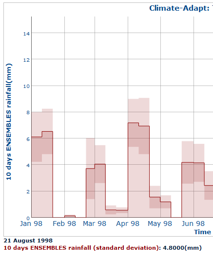

Graph configuration: error bar
Enabled on the dedicated checkbox  it is possible to show the deviation associated to all layers:
it is possible to show the deviation associated to all layers:
-
standard deviation:
to show the variation of the layer;
when available, over point, box and geographical area;

-
spatial deviation:
to show the calculated spatial deviation for the layer;
available only over box and geographical area;